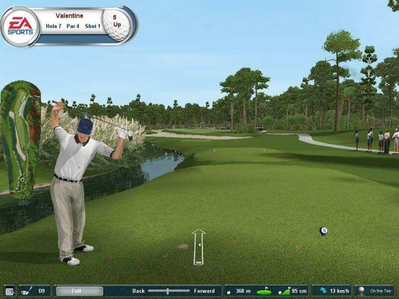
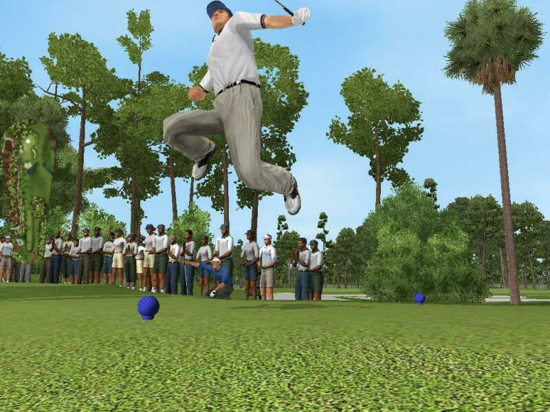
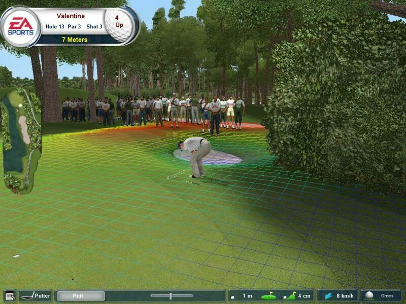
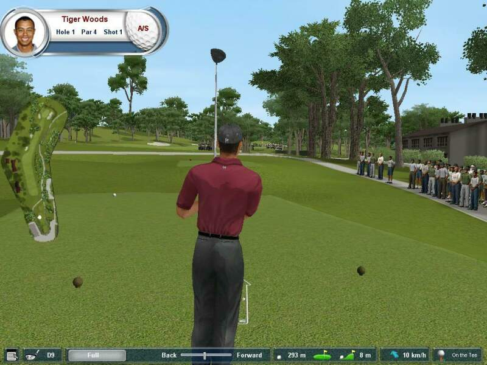
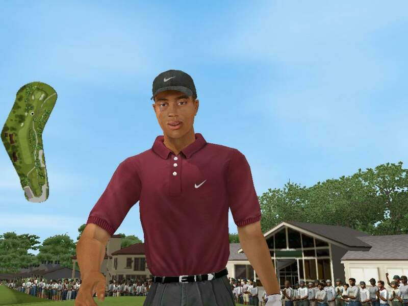

Относится к новому проекту EA Sports – Tiger Woods PGA Tour 2002, как к очередной игре от знаменитых канадцев, как-то не интеллигентно. Это скорее не игра, а именно тренажер, или симулятор гольфа, но никак не просто игрушка. Согласитесь, это две большие разницы. По этому, и рассматривать TWPT мы будем не совсем с той позиции, с которой разбираются все игры.
Когда Тайгер Вудс был маленьким, он еще не играл в гольф и не имел огромного состояния. Но он уже любил побегать по лужайке, махая палкой. Бедный мальчик, он и не подозревал, какая тяжелая судьба ему предрешена. Если быть чуточку серьезнее, можно придти к выводу, что гольф, наверное, одно из самых гениальных изобретений человечества. Посудите сами: активный вид спорта на свежем воздухе не требующий активных физических упражнений. Как следствие, почти полное отсутствие травм. Они, конечно же, есть, но не такие как у футболистов или скажем, хоккеистов. Возможность покататься на картах. По мне, так самое веселое занятие. Плюс ко всему, огромные деньги. Да такие что, выиграв пару знатных турниров, можно начинать думать о домике, в местечке, где потеплее, так как, безбедная старость вам уже обеспечена. И еще одна положительная черта гольфа. Все те же футболисты редко продолжают играть после сорока. А вот гольфисты – пожалуйста. Так что, с какой стороны не посмотри, все равно полный шоколад получается. Хотя нет, есть один неоспоримый минус, играть в гольф могут люди изначально довольно обеспеченные, ну или на худой конец живущие рядом с полем. И тех, и других в процентном соотношение немного. Из-за этого гольф не стал «игрой народной». Ведь вы не можете, придя из школы или с работы, взять сумку с клюшками и пойти покорить пару лунок. Но, не смотря на общую недоступность гольфа, я уверен, что больше половины нормальных, здоровых людей, хотели бы перенестись на поляну и показать Тайгеру, как надо орудовать «девяткой».
 |
| Разминка перед ударом
|
|
Признаюсь, я с самого детства был тесно связан с гольфом. Так как все мое бессознательное младенчество проходило далеко не в России (тогда еще СССР), то про эту забаву я знал не понаслышке. Конечно, махать клюшкой мне тогда еще никто не позволял, но вот бегать и собирать улетевшие мячики… Если же брать во внимание, тот факт, что бегать по зеленой поляне было для меня очень увлекательно, то можно представить насколько интересным казался мне гольф. Так или иначе, но гольф запомнился мне чем-то очень веселым и сейчас ассоциируется только с радостью, какой-то умиротворенностью. И не имея сейчас возможность выбраться на поляну, я очень обрадовался, когда узнал о готовящемся к выходу проекте – Tiger Woods PGA Tour 2002.
 |
| Кто сказал, что гольфисты не летают?
|
|
Как всем известно, дядька Вудс, это один из самых знаменитых гольфистов, старушки земли. И совсем не удивителен тот факт, что именно его имя и фамилия фигурируют в названии нового симулятора от EA Sports. Однако, надо заметить, что это не просто маркетинговый ход. Тайгер действительно принимал участие в разработке игры. Не такое, как нам всем хотелось бы, но показать разработчикам, как надо играть в гольф, он все-таки смог, проведя с ребятами из Headgate Studios целый день. Причем разработчики не просто какие-то профаны. Эти люди ранее отметились таким, вполне достойным продуктом, как PGA Championship. В конечном счете, нам игрокам, это только на руку.
В итоге, получился, ни больше, ни меньше, лучший симулятор гольфа на сегодняшний день.
 |
| Вот так выглядит разочарование. Не попасть с семи метров!
|
|
Запуская TWPT 2002, я был абсолютно спокоен. Потому что игры от признанных лидеров никогда (ну почти) еще не были плохими. Вот, и новый сим не оказался исключением. Все выполнено на высочайшем уровне. Интерфейс, как и всегда удобен и интуитивно понятен. Здесь надо заметить, что «Тайгер» довольно требователен к железу, поковырявшись в настройках, можно добиться вполне сносной работы. Очень не хочется, но снова придется повторяться, EA, как собственно и всегда, накупила кучу лицензий. Откуда все имена и фамилии гольфистов, названия клубов – имеют свой реальный прототип. И если вы в любом разрешении не разглядите на майке Вудса значок компании Nike, киньте в меня чем-нибудь потяжелее. Опять же, для конечного пользователя, от этого только одни блага.
Все это замечательно, скажет не терпеливый читатель, а как же сама игра? Не торопитесь, сейчас мы выйдем на поле. Но прежде надо создать свое компьютерное Альтер-эго. Не престало, мне, почетному гольфмену в пятом колене играть за какого-нибудь Стива Стрикера. Хочу, чтобы морда была такая же, как с утра в зеркале, и майка моего любимого цвета. Итак, игрок создан, тип турнира выбран, соперники назначены, подходящий клуб зарезервирован, погода подогнана под настроение, можно выходить на стратегический простор.
 |
| Главный виновник торжества
|
|
Выход осуществился. А вы все сидите не двигаясь. И только после того как ваше тело медленно ушло под стол, вы приходите в себя. TWPT просто чертовски красив. Настолько, насколько сейчас могут это позволить современные 3D-ускорители. Один взгляд на воду показывает отношение разработчиков к визуальному качеству своей игры. В вышеописанном состоянии вы прибываете, пока камера облетает поле на высоте, привычной для птиц. Когда же вы видите самого «почти себя»… глубокий обморок, продолжительностью 20-30 минут. Вы, скорее всего давно слышали про такую феню как Motion Capture. Она применялась во многих играх, но только здесь она используется на все сто процентов. Таких плавных движений, я не видел никогда. А уж то, насколько четко выражаются эмоции гольфиста, передать трудно. Да, не зря канадцы свой хлеб едят. В реальность происходящего на мониторе веришь с первой секунды, разве что свежего ветерка не хватает.
 |
| Обратите внимание на позу
|
|
Следующим ударом от злобных разработчиков явилась система управления игроком. Как это принято в Америке ее запатентовали и назвали TrueSwing Technology. Суть данной системы заключается в следующем. С помощью стрелки вы выбираете направление удара, а после, мышка превращается, превращается мышка… в элегантную клюшку. Говоря другими словами, качая реальную мышку, вы варьируете силу удара виртуальной клюшкой. Словами те ощущ6ения полного контроля над процессом не передать. Дальше начинается форменный беспредел и полный отъезд крыши от возможностей, предоставляемых игрой. О том, что вы вольны, выбирать тип клюшки, я вообще молчу. Так же вам позволено менять тип удара, следить за ветром… Попадание мячика в песок, действительно является головной болью. Зато когда удается пройти лунку за два удара… руки так и чешутся играть дальше. Подходя к концу и завершая мой рассказ о замечательной игре Tiger Woods PGA Tour 2002, хочу отметить, что люди даже не знающие, по какому принципу ведется счет в гольфе, смогут без особого труда проникнуть во все тонкости процесса заколачивания мячика в лунку. Способствовать вниканию будет тренировочный уровень, где вас научат бить с разных покрытий и следить за ветром. Из минусов хочу выделить вопиющую наглость, нам не дали покататься на картах! Пожалуй, это все, из недочетов. Ой, чуть не забыл отметить одну, казалось бы, не важную примочку. Игра очень четко реагирует на команду Alt+Tab. После чего вы попадаете обратно на рабочий стол и вольны, заниматься своими делами, писать чего-нибудь и т.д. После, того как вы попытаетесь заново начать игру, причем в прошлый раз, не сохраняя ее, вам скажут, что в тот раз игра была не закончена, и предложат продолжить ее. Далее, начнется загрузка уровня, без остановок на логотип и меню. И все это без сохранения… Прямо как в офисных игрушках. Вот такая мелочь, а приятно! Так что играйте в TWPT 2002 и постигайте азы гольфа, того гляди, и на настоящую поляну выйдете.
Назад
Содержание
Вперед